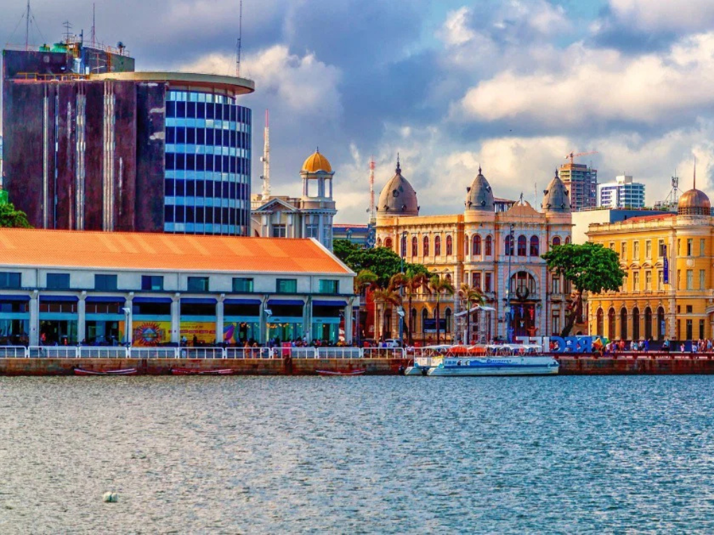

O estado de Pernambuco está localizado na região Nordeste do Brasil e é conhecido por sua grande importância histórica, cultural e econômica para o país. Sua capital é Recife, famosa pelas pontes, praias e pelo rico patrimônio cultural. Pernambuco possui manifestações culturais muito tradicionais, como o frevo e o maracatu, além de um dos carnavais mais famosos do Brasil. O estado também abriga destinos turísticos importantes, como Porto de Galinhas, conhecido pelas águas cristalinas e piscinas naturais. A economia pernambucana é diversificada, com destaque para o turismo, comércio, indústria e agricultura.

Voltar